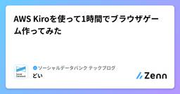
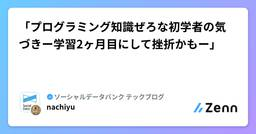
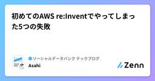
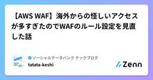
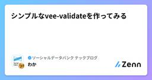
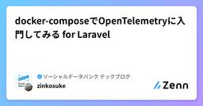
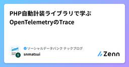
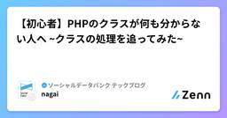

ソーシャルデータバンク テックブログのフィード
https://zenn.dev/p/sdb_blog
ソーシャルデータバンク株式会社の開発チームです。インフラ、品質、UI/UX、DevOpsなど様々な活動に取り組んでいます。
フィード

AWS Kiroを使って1時間でブラウザゲーム作ってみた
ソーシャルデータバンク テックブログのフィード
こんにちは！Social Databank Advent Calendar 2025 の14日目は、SDBのどいが担当します。よろしくお願いします。 はじめに先月AWSのKiroの一般提供が発表されましたね。さらに今年のre:InventではKiro autonomous agentが発表されるなど、とても盛り上がりを見せています。今年はありがたいことに、re:Inventに現地ラスベガスで参加してきました。様々なセッションやイベントに現地で参加してきたのですが、主に開発のハンズオンセッションでは、Kiroを使った開発支援をするものが多く、AWSがKiroを推してきている...
7時間前

「プログラミング知識ぜろな初学者の気づきー学習2ヶ月目にして挫折かもー」
ソーシャルデータバンク テックブログのフィード
こんにちは!Social Databank Advent Calendar 2025 13日目です 🎅本日の記事は、現在エンジニアを目指している平凡文系学部卒がお届けします🎁先日まで知識ぜろの状態から2ヶ月間プログラミング研修(HTML, CSS, JS, PHP)を受けておりました。そんなプログラミング初学者(とっても文系なメンタル豆腐人間)が、勉強を始めてからの2ヶ月間でぶつかった壁と乗り越え方を今回は書いていきたいと思います。これからエンジニアなろうかなと思っている方、もしくは今、超初学者で壁にぶつかっている方の参考になれば幸いです。早速、私がぶつかった壁はこち...
1日前

初めてのAWS re:Inventでやってしまった5つの失敗
ソーシャルデータバンク テックブログのフィード
はじめにこんにちは！Social Databank Advent Calendar 2025 の13日目です。今回、人生初のAWS re:Invent 2025に参加してきました。世界最大級のクラウドカンファレンスということで、参加前はワクワクと緊張が入り混じっていましたが、実際に参加してみて得られたものは想像以上でした。成功や発見もあれば失敗もあります。この記事では、私ならではの体験ということでこの旅を通じてやってしまった5つの失敗について書こうと思います。来年行く人の参考になれば幸いです。 re:Inventってどんなイベント？AWS re:Inventは、毎年ラ...
2日前

【AWS WAF】海外からの怪しいアクセスが多すぎたのでWAFのルール設定を見直した話
ソーシャルデータバンク テックブログのフィード
Social Databank Advent Calendar 2025 の11日目です。こんにちは 😃 tatata-keshiです❗以前、自分が保守運用を担当していたサービスでAWS WAFのルール設定を見直す機会がありました。今回はその時の話を紹介します。 WAF設定を見直すことになった背景 突然のToo many connectionsある日、本番のログにこのようなエラーログが流れてきました。Illuminate\Database\QueryException: SQLSTATE[08004] [1040] Too many connectionsこのログはDB...
3日前

シンプルなvee-validateを作ってみる
ソーシャルデータバンク テックブログのフィード
Social Databank Advent Calendar 2025 の8日目です。vee-validateは使いやすいし素敵ですよね！親コンポーネントでuseFormを宣言したら子コンポーネントでuseFieldが使えるようになるのがとても便利ですよね。構造を知りたいので作っていきたいと思います☺️ 1. useFieldを作るまずは下記のような、1つの入力欄に対して値の管理、バリデーションの実行、エラー表示ができるuseFieldを作っていきます。<script setup>import { useField } from './form';con...
4日前

docker-composeでOpenTelemetryに入門してみる for Laravel
ソーシャルデータバンク テックブログのフィード
Social Databank Advent Calendar 2025 の10日目です。こんにちは、zinです🦑APMの機運が高まってきたので、まずは開発環境でログ・トレース・メトリクスを確認できる環境を作ってみました。まだ動作イメージが持てる程度の理解度ですが、これから育てていこうという気持ちと共に記事にしてみました。サンプルコードはこちらに置いてあります。https://github.com/zinkosuke/local-otel-laravel 構成するコンポーネント今回の環境では、以下のコンポーネントをdocker-composeで起動します。 OpenT...
4日前

PHP自動計装ライブラリで学ぶOpenTelemetryのTrace
ソーシャルデータバンク テックブログのフィード
Social Databank Advent Calendar 2025 の9日目です。 概要!フレームワークやライブラリの引用は説明のため平易に書き換えたり、抄訳しています。PHPにおける自動計装ライブラリのコードリーディングを通して、PHPにおけるTrace計装の手法を学ぶ。 基礎概念Observability入門 で説明されている スパン をPHPに導入するのがOpenTelemetryライブラリの主な役割である。トレース の実現のため、トレーサー を使って、スパンを作成する。スパンには イベント や 属性、スパン種別 を登録できる。 手動計装OpenT...
5日前

【初心者】PHPのクラスが何も分からない人へ ~クラスの処理を追ってみた~
ソーシャルデータバンク テックブログのフィード
こんにちは！Social Databank Advent Calendar 2025 の 7 日目です 🎄PHP マスターのみなさん！さようなら！PHP 初学者のみなさん！こんにちは！この記事は PHP のクラスについて、ほんっっとうに右も左もわからない状態の人に向けた内容になっております 🔥自分は文系出身かつエンジニア歴 2 年目のペーペーで、これまでずっとクラスという存在があやふやなままコードリーディングしている期間が長かったです。同じような段階にいる方たちにとって、少しでもイメージを掴む一助になればと自分の理解を書き起こしてみました。今回はお菓子のキャンディを題材に、C...
5日前

2000行のPRを投げつけた僕が学んだ、コーディングで大切な5つの習慣
ソーシャルデータバンク テックブログのフィード
はじめにSocial Databank Advent Calendar 2025 の6日目です。こんにちは🐉日々のコーディング業務の中で、上司の助言や本の知識から抜粋して意識していることを5つピックアップしてみました。これらは自分が実践している中で特に効果を感じている習慣です。 1. PRの差分はなるべく200行以内に抑えるPull Requestのサイズは、レビューの質に直接影響します。なぜ200行なのか?それは多すぎるとレビュアーは読まなくなるからです😊レビュアーにも集中力があります。人間の集中力なんてたかが知れてるので、あまりに修正が多いと集中が切れて見落...
8日前
社内でClaude Codeのトークンを一番使った人の使い方ガイド
ソーシャルデータバンク テックブログのフィード
はじめにSocial Databank Advent Calendar 2025 の5日目です。気づいたら社内でClaude Codeのトークン使用量が一番になってました。1ヶ月で約150ドル使ってたらしいです。ヒョエ〜150ドルってどのくらい？2.3万円くらいらしい（エアライダーのamiibo4つくらい買えちゃうね💸）なんでこんなに使ったのか、どう使ってたのか振り返ってみます。 Claude Codeって何？Anthropic社が出してるAI開発ツールです。普通に日本語で「これ作って」って言うとコード書いてくれたり、バグ直してくれたりします。便利だなぁ〜 どう...
9日前
AWS認定クラウドプラクティショナーおすすめの勉強法3選
ソーシャルデータバンク テックブログのフィード
Social Databank Advent Calendar 2025 の4日目です。こんにちは 😃 tatata-keshiです ❗私事ですが、先日AWS認定クラウドプラクティショナーに合格しました🎊この記事では、AWS認定クラウドプラクティショナーを合格するために行なったおすすめ勉強を3つ紹介します！ AWS認定クラウドプラクティショナー、3つのオススメ勉強法 1. 参考書を読み込む1つ目の勉強法はひたすら参考書を読むことです。私は AWS認定 クラウドプラクティショナー 改訂第3版 (ＡＷＳ認定資格試験テキスト) を参考書にしました。この本は試験範囲の内容につ...
10日前
Claude Skillsで実現する"覚えないで済む"開発ワークフロー
ソーシャルデータバンク テックブログのフィード
こんにちは😊 kesojiです。Social Databank Advent Calendar 2025 の3日目です。もう出てから2ヶ月近く経ちますが、 Claudeの Agent Skills について書いていこうと思います。 TL;DRClaude Skillsは人間が覚えておくことが減ってうれしい！スキルが思ったように使われないときは、CLAUDE.mdで使うように明確に書こう！ Claude Skillsとは公式ブログ によると、既にみなさんはClaudeのデスクトップアプリではスプレッドシートやプレゼンテーションのようなファイルを作成するスキルを見た...
11日前
Laravelキューの流量と排他の制御とセマフォによる同時実行数の制御
ソーシャルデータバンク テックブログのフィード
Social Databank Advent Calendar 2025 の2日目です。 概要!リンクや表現は原則Laravel12.xに準拠し、ドキュメントは Readouble を用います。記載のLaravelフレームワークのコードは説明のため平易に書き換えています。Laravelでジョブを非同期処理する際、キュー を使用する。キューは Supervisor などによって起動された php artisan queue:work プロセスによって処理される。プロセスがジョブをバランスよく処理するためには流量の制御や排他の制御などが必要になる。 キューの使い分けを使...
12日前
MCPサーバーで始める不具合分析の自動化に挑戦中
ソーシャルデータバンク テックブログのフィード
はじめにSocial Databank Advent Calendar 2025 の1日目です。今回は現在QAチームで取り組んでいる不具合の自動分析について説明したいと思います。現在SDBではプロダクトの規模、参加する開発者も増えてきました。そのため、増加するリリースに耐えられるようにCI/CDや自動テストなどの取り組みを行っています。その中の1つに不具合分析をしていますが、不具合の管理〜分析に工数がかかるという問題がありました。また、不具合の共有が遅れてしまえば、内容を忘れ陳腐化することもあります。そのため、不具合に関わる項目を自動化することで共有までの工数短縮を図るこ...
13日前
【Vue Fes Japan 2025】スポンサー参加レポート
ソーシャルデータバンク テックブログのフィード
こんにちは。ik2mです。今回は、2025年11月19日に開催されたVue Fes Japan 2025のスポンサー参加レポートをお届けします。昨年度の記事はこちら ✨Vue Fes Japan 2025はゴールドスポンサーとなりました昨年のVue Fes Japan 2024に続き、今年もスポンサーとして参加しました。今年は一歩進んでゴールドスポンサーとして協賛し、ブース出展を通じて多くの参加者の方々と直接交流できました。 🎪 Vue Fes JapanとはフロントエンドフレームワークVue.jsの日本最大級のカンファレンスです。また、「Fes=お祭り」の名が示す...
16日前
Pythonで簡単サブコマンド
ソーシャルデータバンク テックブログのフィード
こんにちは、zinです🦑データ基盤まわりのコードを書いていると、「普段はワークフローエンジンから実行するけど、トラブル時には手元でも動かせるようにしておきたいなぁ」と思うこと、ありませんか？そんなとき、標準ライブラリの argparse だけで簡単に実現できます。argparseは高機能で使いこなそうと思うと奥が深いですが、今回はできるだけシンプルにサクッと使える最小構成を目指します。 さっそく実装編30行程度でそれなりのものができます。parserに渡す引数は好みに応じて調整してください。利用可能なオプションの一覧を最初に受け取り、add_handler時に参照してい...
1ヶ月前
SerializeModelトレイトの導入
ソーシャルデータバンク テックブログのフィード
概要!リンクや表現は原則Laravel12.xに準拠する。記載のLaravelフレームワークのコードは説明のため平易に書き換えています。Laravelでジョブを非同期処理する際、キュー を使用する。RedisやRDSなどのキューストア中で、データはシリアライズされた状態で保存される。多くのパラメータを持つEloquentモデルをシリアライズすると、キューストアのデータ容量を圧迫してしまう。その解決として クラスの構造 にて、SerializesModelsが紹介されている。この例では、Eloquentモデルをキュー投入するジョブのコンストラクタへ直接渡すことができ...
2ヶ月前
Deep Dive Laravel Queue
ソーシャルデータバンク テックブログのフィード
概要Laravelでは キュー 機能を使うことで、Jobという処理単位を非同期処理できる。Laravelフレームワークをコードリーディングする上で理解しづらい箇所を解説する。!リンクや表現はLaravel12.xに準拠する。記載のLaravelフレームワークのコードは説明のため平易に書き換えています。 著者の主な実績自称LaravelバリスタLaravel歴9年Laravel5.1→8.x、8.x->10.x、10.x->12.xへのアップグレード主導laravel/framework へPR採用 ジョブっぽいクラスたち Illumi...
2ヶ月前
そういやコレなんでこんな名前なん？
ソーシャルデータバンク テックブログのフィード
はじめに人間ってありとあらゆるものに名前をつけて物事を認識しようとしますよね🦍普段何気なく使っている技術用語ふとそういやコレなんでこんな名前なん？🤔と疑問に思ったので身近な技術用語の語源をまとめてみました。 プログラミング言語 Javaプログラミング言語「Java」は、開発チームがよく飲んでいたコーヒーの産地「ジャワ島」から名前が取られています。当初は「Oak」という名前でしたが、商標の問題で変更が必要になり、コーヒー好きの開発チームによって「Java」が選ばれました。ロゴもコーヒーカップのデザインです。開発者ってコーヒー好きだよね〜☕️ Pythonプログ...
3ヶ月前
【開発生産性カンファレンス2025】スポンサー参加レポート
ソーシャルデータバンク テックブログのフィード
はじめにソーシャルデータバンクのしまだです。先月開催された 開発生産性カンファレンス 2025 にスポンサーとして参加いたしました 🏃♀️書こう書こうと思っているうちに開催からもう一ヶ月も経ってしまいましたが 忘れないうちに参加レポートを残しておこうと思います。 イベント概要https://dev-productivity-con.findy-code.io/2025 2 回目のブース出展ブース運営を担当しておりました、ソーシャルデータバンク shiotsu です。Developers Summit 2025 に続いて 2 回目となるブース出展でした。今回は、...
4ヶ月前